실습2. Glue, Athena, Quicksight로 수집한 S3의 데이터 분석
Lab 소개
이번 Lab에서는 이전 시간에 진행한 Lab에서 Kinesis Firehose로 S3에 저장한 데이터를 Glue, Athena, Quicksight 를 이용해 분석해봅니다.
Lab Architecture

AWS Glue
AWS Glue는 완전관리형 ETL(Extract, Transform, Load) 엔진입니다. 실습에서는 AWS Glue로 Kinesis Firehose가 S3에 저장한 데이터를 크롤링하여 Hive 호환 External Table을 만들고 Athena, QuickSight로 데이터를 분석하고 시각화 합니다.
- AWS Glue에서 ETL Job을 수행하기 위해서는 특정 IAM Role이 필요합니다. IAM 서비스에 접속합니다. https://console.aws.amazon.com/iam
- 좌측 메뉴에서 Policy를 클릭하고 Create Policy 버튼을 클릭합니다.
Create Policy 화면에서 JSON 탭을 클릭하고 아래 Policy를 복사하여 붙여 넣고 Review Policy를 클릭합니다.
{ "Version": "2012-10-17", "Statement": [ { "Action": [ "s3:*", "ec2:*", "iam:*", "glue:*", "logs:*" ], "Resource": "*", "Effect": "Allow" } ] }Review Policy 화면에서 Name은 GluePolicy를 입력하고 Create Policy 버튼을 클릭합니다.
좌측 메뉴에서 Roles을 클릭하고 Create Role 버튼을 클릭합니다.
Choose the service that will use this role 에서 Glue를 클릭하고 Next: Permission 버튼을 클릭합니다.
Search 입력창에 방금 만든 GluePolicy를 입력하고 GluePolicy를 선택하고 Next: Review 버튼을 클릭합니다.
Review 화면에서 Role name은 GlueRole을 입력하고 Create Role버튼을 클릭합니다.
좌측 Roles 을 클릭하고 GlueRole이 정상적으로 생성되었는지 확인합니다.
AWS Glue (https://console.aws.amazon.com/glue 로 이동합니다. 이전 Lab에서 생성한 S3내 source 폴더 아래 파일 들을 Crawling하여 메타스토어 테이블을 만듭니다. Data catalog > Databases 를 클릭하고 Add database 를 클릭합니다. 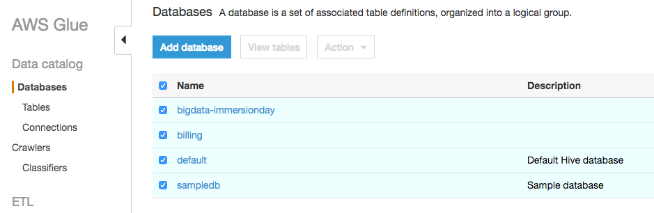
Database name 은 Immersion Day 를 입력하고 Create 를 클릭합니다.
Data catalog > Databases > Tables 를 클릭하고 Add tables > Add tables using a crawler 를 클릭합니다.

Crawler name에 TestCrawler 입력 후 Next 를 클릭합니다.
Crawling 할 S3 Bucket 및 폴더를 지정합니다. Include Path 에 s3://bigdata-immersionday/source 을 입력하거나 탐색기 버튼을 클릭하여 bigdata-immersionday 버킷 아래 source 폴더를 선택한 후 Next를 클릭합니다.
Add another data store는 No를 선택하고 Next를 클릭합니다.
Choose an IAM role 화면에서 Choose an existing IAM role을 선택하고 앞서 생성한 GlueRole을 선택한 후 Next를 클릭합니다.
Crawler는 on-demand 방식으로 수행할 수 있고, 배치 방식으로 수행할 수 있습니다. 실습에서는 ondemand 방식으로 수행합니다. Frequency는 Run on demand를 선택하고 Next를 클릭합니다.
Database는 앞서 생성한 Immersion Day를 선택한 후 Next를 클릭합니다.
Crawler 설정을 모두 확인한 후 Finish를 클릭합니다.
Data catalog > Crawlers 에서 생성한 TestCrawler를 선택한 후 Run crawler를 클릭합니다. 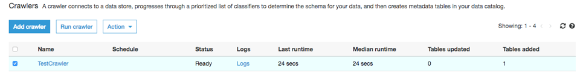
Crawler는 S3에 저장된 파일을 분석하고 테이블을 생성합니다. Crawling이 끝난 후 테이블 1개 (테이블명 : source)가 생성되었음을 확인합니다. 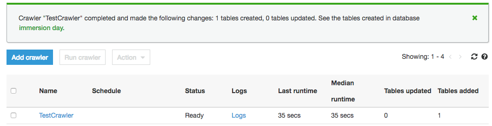
Databases > Tables 에서 방금 생성된 source 테이블을 클릭하여 테이블 구조를 확인합니다.
Kinesis Firehose가 s3://bigdata-immersionday/source 에 저장한 JSON 파일 포맷 스트림 데이터를 Parquet 파일 포맷으로 변경하고, 일부 컬럼의 데이터 타입을 변경한 후 s3://bigdataimmersionday/parquet 폴더에 파일을 저장하는 Glue ETL 작업을 생성하겠습니다.
우선 ETL후 결과 파일이 저장될 폴더를 생성합니다. S3 콘솔로 로그인한 후 bigdata-immersionday 버킷를 선택하고 parquet 폴더를 생성합니다. 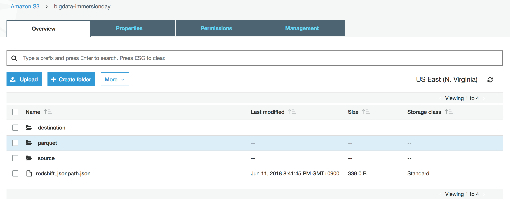
Glue 콘솔(https://console.aws.amazon.com/glue)에서 ETL > Jobs를 선택한 후 Add Job을 클릭합니다.
Job Properties 화면에서 Name은 TestJob을 입력하고, IAM role은 앞서 생성한 GlueRole을 선택합니다. Advanced properties 에서 Job bookmark를 Enable하여 Glue가 마지막으로 처리한 데이터를 기억하게 합니다. Next를 클릭합니다.
Choose your data sources 화면에서 source를 선택하고 Next를 클릭합니다. 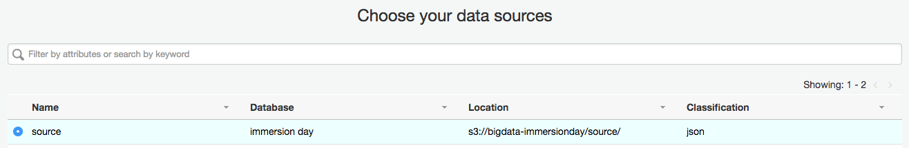
Choose your data targets 화면에서 Create tables in your data target를 클릭하고 Data store는 Amazon S3, Format은 Parquet, target bucket은 s3://bigdata-immersionday/parquet 를 입력합니다. Next를 클릭합니다. 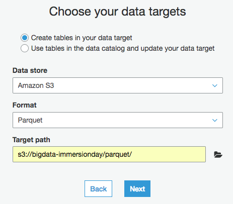
occurencestartdate, discoverydate 컬럼의 data type을 DATE로 변경한 후 Next를 클릭합니다. 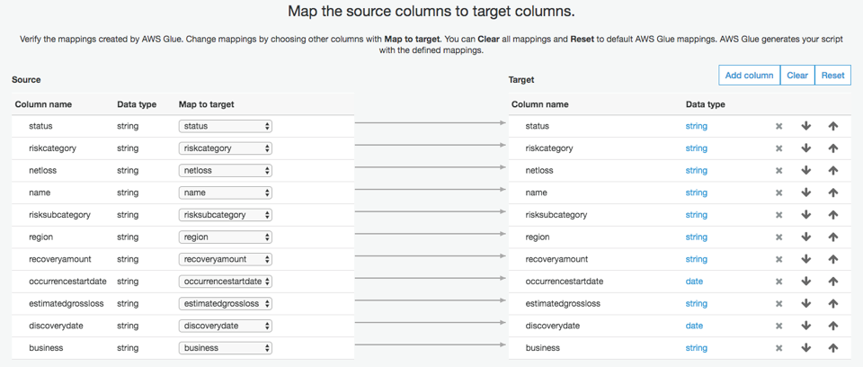
Save job and edit script 버튼을 클릭합니다.
스크립트 내용을 검토한 후 상단의 Run Job버튼을 클릭하여 ETL을 시작합니다. 작업 완료까지 수 분이 소요될 수 있습니다.
Glue ETL 작업이 끝나면 s3://bigdata-immersionday/parquet 폴더에 parquet 타입 파일이 생성됩니다.
Glue ETL이 변환한 Parquet 파일을 Crawling하여 테이블을 생성합니다. AWS Glue > Crawler > TestCrawler를 선택하고 Action > Edit Crawler 를 선택합니다. 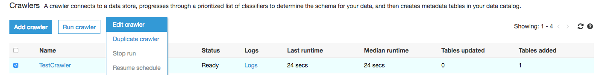
Add information about your crawler 화면에서 Next 를 클릭합니다.
Add a data store 화면에서 Next 를 클릭합니다.
Add another data store 화면에서 Yes를 선택한 후 Next를 클릭합니다.
Add a data store 화면에서 Include path에 s3://bigdata-immersionday/parquet 를 입력한 후 Next를 클릭합니다. 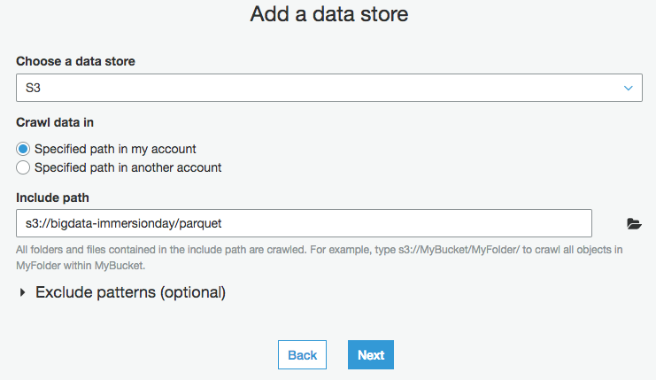
Add another data store 화면에서 Next를 클릭합니다.
Choose an IAM role 화면에서 Next를 클릭합니다.
Create a schedule for this crawler 화면에서 Next를 클릭합니다.
Configure the crawler’s output 화면에서 Next를 클릭합니다.
Review 화면에서 Finish를 클릭합니다.
TestCrawler를 선택하고 Run crawler를 클릭합니다. 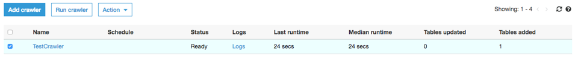
Crawler 실행 후 parquet 테이블이 생성됩니다.

Amazon Athena
- Athena를 이용하여 테이블 데이터를 조회할 수 있습니다. Glue Crawler가 만든 parquet 테이블을 클릭하고 Action > View data를 클릭합니다. 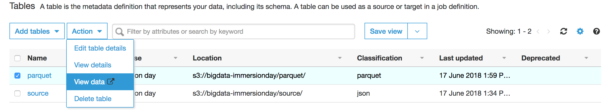
- Athena Console이 열리고 SELECT * FROM “immersion day”.“parquet” limit 10; Query가 수행되었습니다. 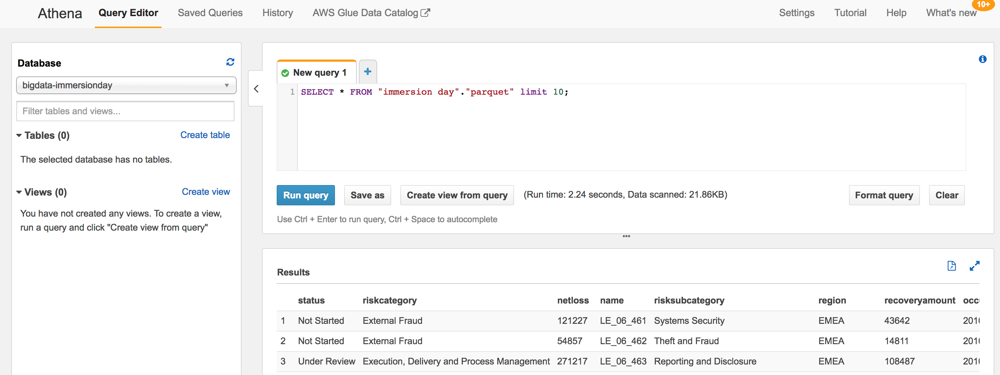
ANSI 표준 SQL문을 통해 S3내 데이터를 조회할 수 있습니다.
SELECT region, status, count(*) as "COUNT" FROM "immersion day"."parquet" GROUP BY region, status ORDER BY region;

Amazon QuickSight
- 이번에는 Amazon Quicksight를 통해 parquet 테이블 데이터를 시각화 해 보도록 하겠습니다. Quicksight 콘솔로 이동합니다. https://quicksight.aws.amazon.com
- Quicksight에 가입하기 위해 Sign up for QuickSight 버튼을 클릭합니다.

- Standard Edition을 선택한 후 Continue버튼을 클릭합니다.
- Quicksight account name은 임의로 지정(중복될 경우 계정이 생성되지 않습니다) 하고 Notification email address는 개인 Email 주소를 입력합니다. QuckSight가 S3에 Access해야 하므로, Choose S3 buckets를 클릭하여 bigdata-immersionday를 선택한 후 Finish를 클릭합니다. 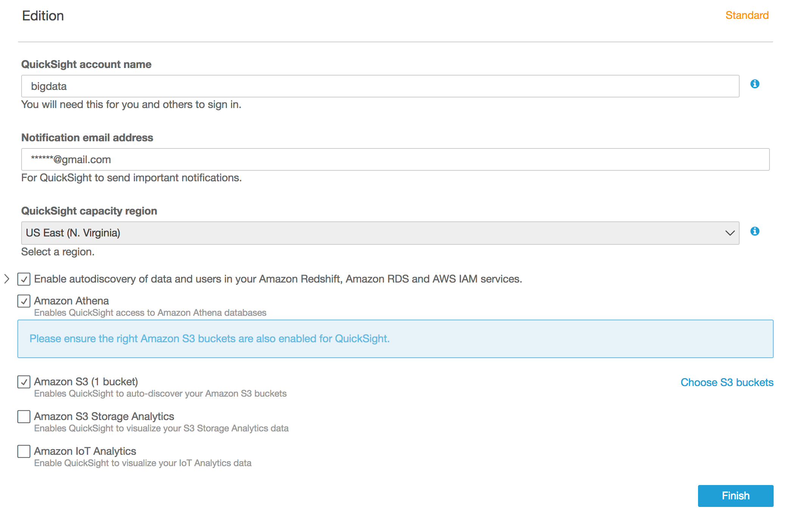
- 계정이 생성된 후 Go to Amazon Quicksight 버튼을 클릭합니다.
- 좌측 상단 New Analysis를 클릭합니다. 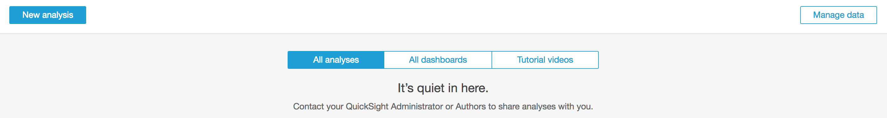
- New Data Set 버튼을 클릭합니다.

- Athena를 클릭하고 팝업 창의 Data source name에 bigdata-quicksight를 입력(임의의 값 입력 가능)하고 Create data source버튼을 클릭합니다.

- Choose your table에서 Database는 Immersion day, Tables는 parquet를 선택하고 Select 버튼을 클릭합니다.

- Visualize 버튼을 클릭한 후 parquet 테이블 데이터가 Quicksight SPICE 엔진에 로딩 되었는지 확인합니다. 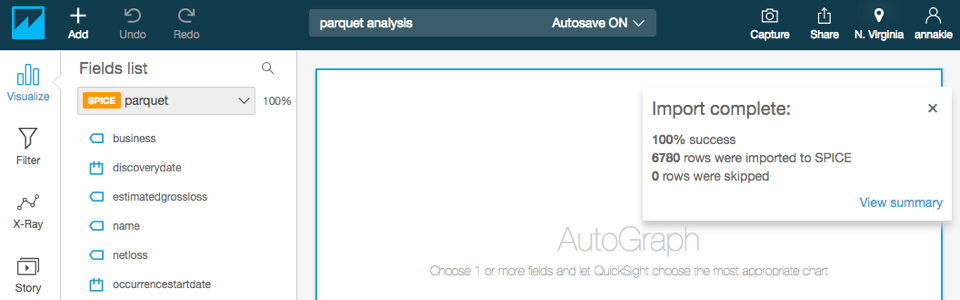
- 발생년도 별 Business Count를 시각화 해 보겠습니다. 좌측 Fields list에서 occurrencestartdate, business field를 차례대로 클릭합니다. Visual types는 세로 막대 그래프를 선택합니다. 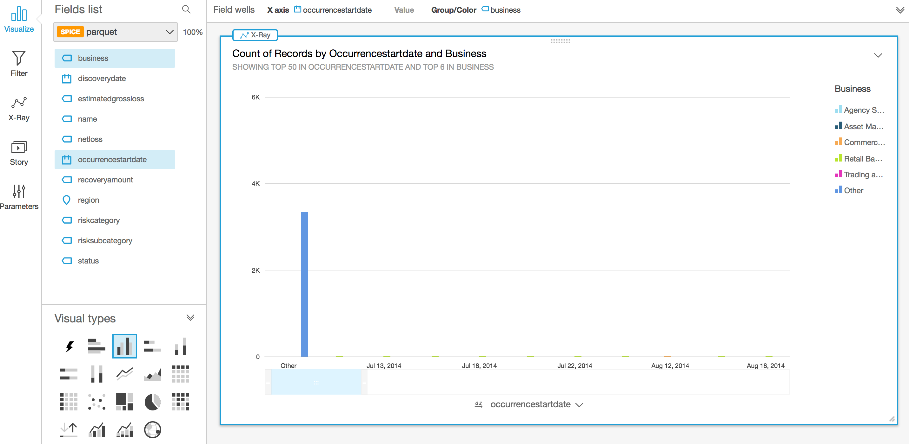
- 그래프 하단 occurrencestartdate 를 클릭하고 Aggregate: Day를 Year로 변경합니다.

- 연도별로 데이터가 집계 되었습니다. 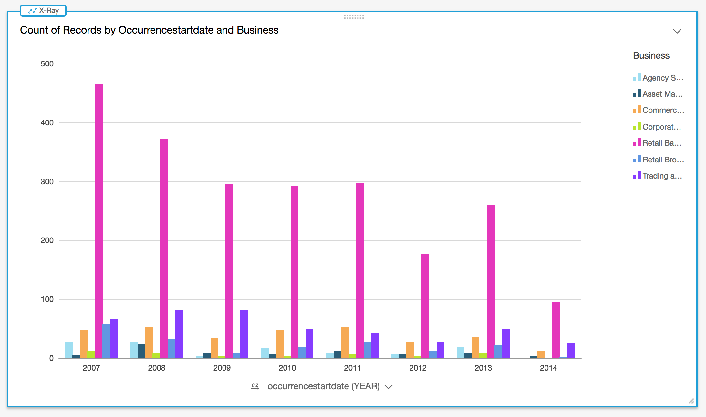
- 방금 만든 Dashboard를 다른 사용자에게 공유해 보겠습니다. 좌측 상단 유저 아이콘을 클릭하고 Manage QuickSight를 클릭합니다.
- Invite users 버튼을 클릭한 후 임의의 사용자 계정명(BI_user01)을 입력한 후 우측 [+] 버튼을 클릭합니다. Email은 다른 사용자의 Email 주소를 입력하고 Role은 AUTHOR, IAM User는 NO를 선택한 후 Invite 버튼을 클릭합니다. 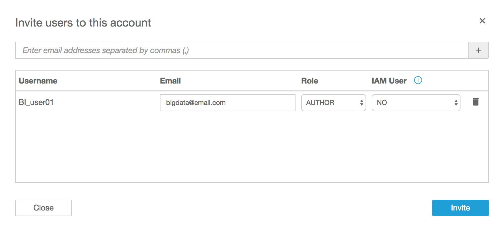
- 사용자는 다음과 같은 Invitation Email을 받고 Click to accept invitation을 클릭하면 계정 생성 메뉴에서 비밀번호를 변경할 수 있습니다. 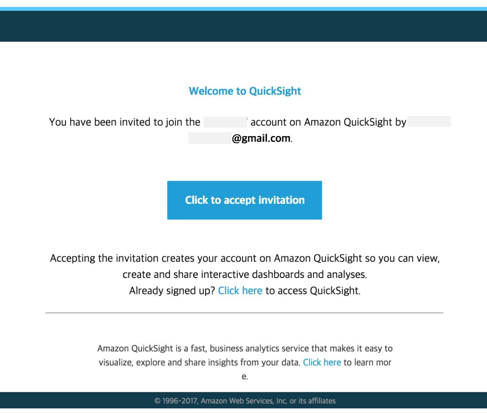
- QuickSight 화면으로 돌아가서 우측 상단의 Share > Share analysis를 클릭합니다. 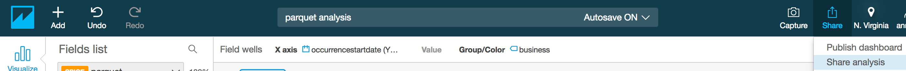
- BI_user01을 선택한 후 Share 버튼을 클릭합니다. 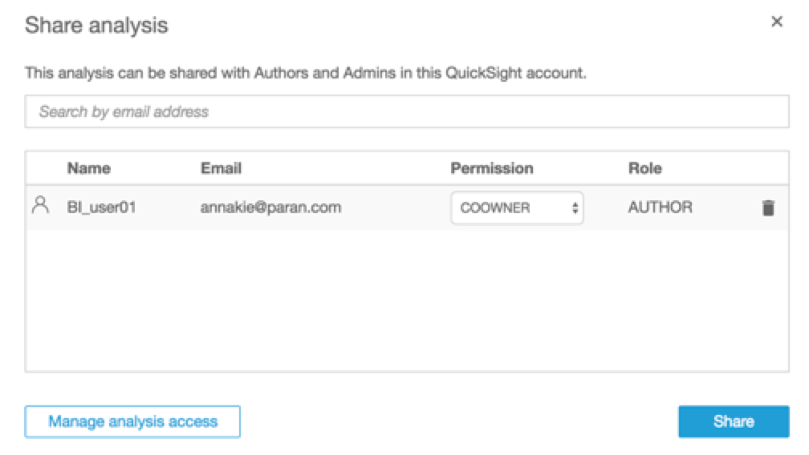
- 사용자는 다음과 같은 Email을 수신합니다. Click to View를 클릭하여 분석결과를 확인할 수 있습니다. 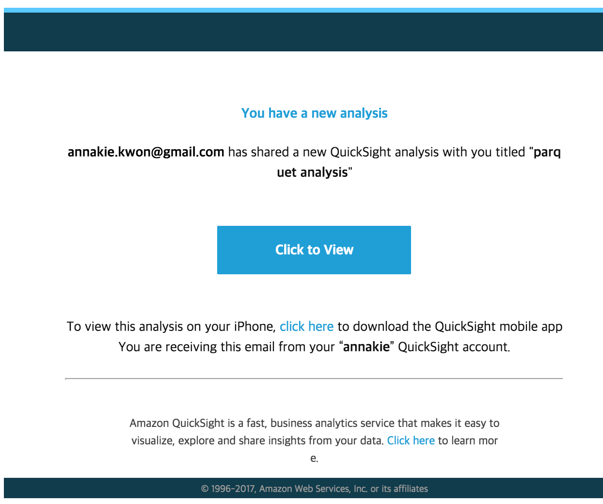
© 2019 Amazon Web Services, Inc. 또는 자회사, All rights reserved.